Справочник по Angular и React · модуль 4 · работа с ИИ-агентом и обзор Angular
4.1
Тесты компонентов
В модуле 4 код начинает писать ИИ-агент, а человек проверяет его работу. Тесты — первое, чем она проверяется. Тест — это небольшая программа: она запускает ваш код на заранее известных данных и сравнивает результат с тем, что должно получиться. В этой главе к приложению «Мониторинг сайтов группы» из проекта модуля 3 добавляются тесты на Vitest и Testing Library. Тесты, написанные по требованиям к странице, находят в готовом проекте две ошибки, которые при проверке руками не видны. Затем тесты становятся шагом публикации: сайт с упавшим тестом не публикуется.
- Категория
- Тесты, Vitest, Testing Library
- Уровень
- Начальный
- Что понадобится
- Проект и репозиторий
monitoringпосле проекта модуля 3 - Результат
- 19 тестов, команда
npm test, исправлены две ошибки страницы «Сайты», шаг тестов вdeploy.yml
§1Зачем тесты
РазбираемсяПроверка руками и проверка программой
До сих пор приложение проверялось руками: запустить npm run dev, открыть страницу, посмотреть, пощёлкать. Такая проверка работает, пока изменений мало и вы помните, что проверять. Главная страница монитора должна выполнять несколько требований, и после каждого изменения кода их нужно перепроверить все.
| Требование к странице «Сайты» | Как проверить руками |
|---|---|
| Сводка считает сайты, которые не открылись при последней проверке | Найти в results.json сайт с ошибкой, сравнить число со сводкой |
| Карточка ведёт на страницу своего сайта | Щёлкнуть по карточке, посмотреть адрес |
| Пока данные загружаются, видна надпись «Загрузка результатов…» | Замедлить сеть в DevTools и обновить страницу |
| Если все сайты открылись, сводка так и говорит, по-русски правильно | Подменить results.json так, чтобы все сайты работали |
| Если проверок ещё не было, сводка не утверждает, что сайты не открываются | Очистить историю в results.json |
В задачнике ответы напечатаны в конце книги. Решив задачу, ученик сверяет свой ответ с напечатанным: совпал — решено верно. Ответ записан в книге до того, как ученик начал решать.
В задачнике ответ проверяет человек. Тест сверяет ответ программой, сам и за секунды, сколько бы раз его ни запускали. Проверяет он только те случаи, которые в него записали.
Последние две строки руками почти никто не проверяет: для них нужно готовить особые данные. Тест делает такую проверку программой. Он готовит данные, запускает код и сравнивает результат с ожидаемым. Если результат совпал, тест проходит, если нет — падает и сообщает, что получилось вместо ожидаемого.
Из чего состоит тест
Данные в тесте придуманы заранее, поэтому правильный ответ известен до запуска.
На схеме слева направо — три части любого теста. Данные в первой части придуманы автором теста: три сайта, одна проверка, один сайт с ошибкой. Ответ на таких данных можно посчитать в уме — «не открывается 1 из 3». Во второй части запускается проверяемый код, в третьей его результат сравнивается с этим ответом. Устройство кода внутри тест не проверяет: он сравнивает только результат.
В главе 0.5 список проверки кода, написанного ИИ, начинается с двух пунктов: сборка и тесты. Агент в модуле 4 будет писать и код, и тесты к нему. Чтобы принять или вернуть его работу, нужно уметь прочитать тест и понять, проверяет ли он требование.
Тесты запускает отдельная программа. Для проектов на Vite обычно берут Vitest.
§2Vitest и первый тест
РазбираемсяЧто понадобится
Vitest — программа для запуска тестов, сделанная авторами Vite. Она берёт настройки из vite.config.ts и запускает файлы на TypeScript и JSX без дополнительной настройки. Тесты лежат в файлах с окончанием .test.ts или .test.tsx рядом с проверяемым кодом; Vitest находит их сам.
Для тестов компонентов понадобятся ещё пять пакетов. Ставятся они вместе с Vitest одной командой.
vitest— запуск тестов.jsdom— страница браузера в памяти, без окна. Компоненту нуженdocument, а в Node.js его нет.@testing-library/reactи@testing-library/dom— показ компонента на этой странице и поиск на ней текста, кнопок, ссылок.@testing-library/user-event— действия пользователя: щелчки, ввод текста.@testing-library/jest-dom— дополнительные проверки для элементов страницы, например «элемент есть на странице».
ДелаемУстанавливаем Vitest и пишем первый тест
- Установите пакеты
Откройте папку
monitoringв VS Code и выполните в терминале команду. Ключ-Dзаписывает пакеты вdevDependencies: они нужны при разработке, в собранный сайт не попадают.Терминал · папка monitoring npm install -D vitest@5.1.0 jsdom@31.0.0 @testing-library/react@16.3.3 @testing-library/dom@10.4.2 @testing-library/user-event@14.6.10 @testing-library/jest-dom@7.0.1
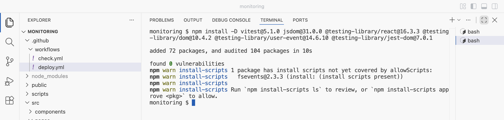
Добавлено 72 пакета, уязвимостей нет Строки
npm warn install-scriptsна macOS относятся к пакетуfsevents: npm не запускает установочные скрипты пакетов, которые вы не разрешили. Для тестов этот скрипт не нужен, предупреждение можно не трогать. На Windows и Linux этой строки нет. - Добавьте команду запуска
Выполните в терминале команду. Она добавит в
package.jsonскриптtest.Терминал · папка monitoring npm pkg set scripts.test=vitest
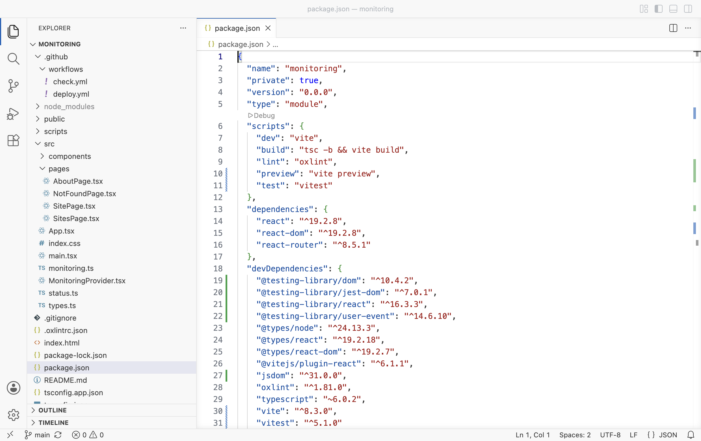
package.json: скрипт test и шесть новых пакетов - Напишите первый тест
Первым проверим функцию
statusTextизsrc/status.ts: она превращает результат проверки в строку на карточке. Компонентов и страницы ей не нужно. Создайте рядом файлsrc/status.test.ts.monitoring/src/status.test.ts import { describe, expect, it } from 'vitest' import { statusText } from './status' describe('statusText', () => { it('сайт ещё не проверялся', () => { expect(statusText(undefined)).toBe('Не проверялся') }) it('сайт работает', () => { const check = { id: 'git', ok: true, status: 200, ms: 340, error: '' } expect(statusText(check)).toBe('Работает · 340 мс') }) it('сервер ответил ошибкой', () => { const check = { id: 'git', ok: false, status: 404, ms: 120, error: '' } expect(statusText(check)).toBe('Не открывается · 404') }) it('сервер не ответил', () => { const check = { id: 'git', ok: false, status: 0, ms: 15000, error: 'timeout' } expect(statusText(check)).toBe('Не открывается · timeout') }) })
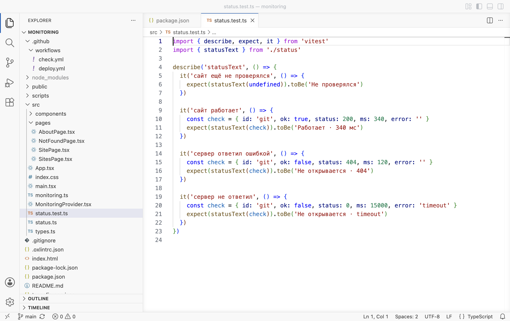
status.test.ts лежит рядом с status.ts - Запустите тесты
Терминал · папка monitoring npm test
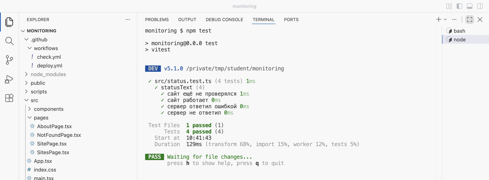
Четыре теста прошли, Vitest следит за файлами
РазбираемсяКак устроен файл теста
import { describe, expect, it } from 'vitest' 1 import { statusText } from './status' describe('statusText', () => { 2 it('сайт ещё не проверялся', () => { expect(statusText(undefined)).toBe('Не проверялся') }) it('сайт работает', () => { 3 const check = { id: 'git', ok: true, status: 200, ms: 340, error: '' } 4 expect(statusText(check)).toBe('Работает · 340 мс') 5 }) it('сервер ответил ошибкой', () => { const check = { id: 'git', ok: false, status: 404, ms: 120, error: '' } expect(statusText(check)).toBe('Не открывается · 404') }) it('сервер не ответил', () => { const check = { id: 'git', ok: false, status: 0, ms: 15000, error: 'timeout' } expect(statusText(check)).toBe('Не открывается · timeout') }) })
- 1
Три функции Vitest. Их импортируют явно, как
useStateиз React. - 2
describeобъединяет тесты одной темы под общим заголовком. В выводе Vitest заголовокstatusTextстоит над четырьмя тестами. - 3
it— один тест. Первый аргумент — что проверяется, обычными словами: эта строка появится в выводе со знаком ✓ или ✗. Второй — функция с самой проверкой. Название записывают как требование: «сайт работает». - 4
Подготовка: придуманная проверка сайта — ответ 200 за 340 мс. Объект имеет тот же вид, что элементы
checksвresults.json. - 5
Выполнение и сравнение в одной строке.
expect(значение)берёт результат,.toBe(ожидание)сравнивает его с ожидаемым. Если строки различаются хоть одним знаком, тест падает.
Четыре теста соответствуют четырём веткам statusText. Первые три: проверки не было (undefined), сайт ответил, сервер вернул ошибку с кодом. Четвёртая: сервер не ответил, кода нет, и выводится текст ошибки. Так каждая ветка функции проверена хотя бы одним тестом.
ДелаемОпыт: ломаем функцию
Тест, который ни разу не падал, ничего не доказывает: может быть, он не проверяет то, что написано в его названии. Сломаем функцию и посмотрим, заметит ли тест.
- Испортите подпись
Не останавливая
npm test, откройтеsrc/status.tsи замените в строке «Работает» русскоемсна латинскоеms. Сохраните файл.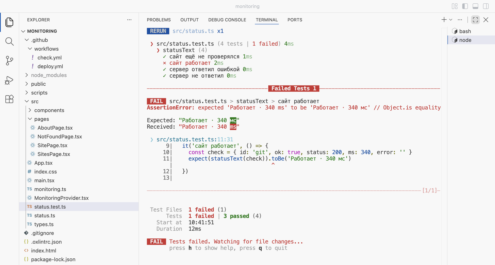
statusText > сайт работает; AssertionError: expected 'Работает · 340 ms' to be 'Работает · 340 мс'; Expected: Работает · 340 мс, Received: Работает · 340 ms; Tests 1 failed | 3 passed" loading="lazy">Vitest перезапустил тесты сам: один упал - Верните как было
Замените
msобратно намси сохраните.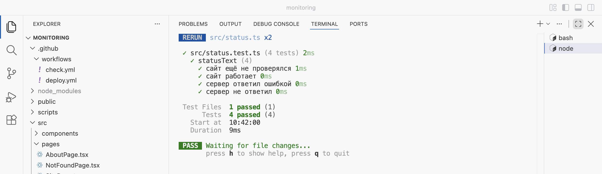
Снова четыре зелёных
Сообщение о падении на кадре состоит из трёх частей. Сверху — какой тест упал: statusText > сайт работает. Ниже — Expected, что ожидал тест, и Received, что вернула функция; различающиеся буквы подсвечены. Ещё ниже — строка теста со стрелкой под сравнением. Остальные три теста прошли: ветки ошибок порчу не задели.
Тесты перезапустились без новой команды. npm test запускает Vitest в режиме наблюдения. Он следит за файлами проекта и после каждого сохранения повторяет тесты, которые зависят от изменённого файла. На кадре это строка RERUN src/status.ts. Пока вы пишете код, Vitest держат открытым в отдельном терминале. Клавиша q в терминале завершает наблюдение, a повторяет все тесты.
Если в окружении есть переменная CI, Vitest считает, что работает на сервере сборки: выполняет тесты один раз и завершается. Так же он поступает, когда его запустил ИИ-агент: агенты оставляют свои переменные окружения, например AI_AGENT или CLAUDECODE, и Vitest проверяет и их. Агент читает итог одного прогона, наблюдение ему не нужно.
Функцию можно проверить вызовом. Компонент возвращает разметку, и проверять нужно то, что увидит пользователь на странице.
§3Тест страницы
РазбираемсяСтраница без браузера
Актёры репетируют спектакль в декорациях без зрителей. Сцена, мебель и реквизит такие же, как на премьере, а зала нет. Страница jsdom — такие декорации для компонента: document и элементы на нём есть, окна браузера нет.
На репетиции видно, как выглядит сцена. jsdom ничего не рисует: размеров, цветов и расположения элементов в нём нет. Поэтому тест проверяет текст и разметку, а внешний вид страницы — нет.
Компонент SitesPage показывает сводку и карточки сайтов. Проверить его — значит показать его где-то и найти на странице нужный текст. Открывать для этого настоящий браузер долго, поэтому тест показывает компонент на странице, которую jsdom держит в памяти. Testing Library выполняет ту же работу, что createRoot(…).render(…) в main.tsx, только на этой странице, и даёт функции для поиска на ней.
Страница «Сайты» в тесте
Провайдер с загрузкой файлов заменён контекстом с готовыми данными.
На схеме видно, откуда страница берёт данные. В приложении их загружает MonitoringProvider из файлов public/data. В тесте провайдера нет: компонент обёрнут прямо в MonitoringContext из главы 3.2, и в value передаются придуманные данные. Поэтому тест не зависит от сети и от того, что лежит в results.json сегодня. Вторая обёртка, MemoryRouter, нужна карточкам: Link работает только внутри маршрутизатора. MemoryRouter хранит адрес в памяти: адресной строки у jsdom нет.
ДелаемНастраиваем jsdom и пишем тесты страницы
- Настройте Vitest
Замените содержимое
vite.config.ts. ФункцияdefineConfigтеперь импортируется изvitest/config: в ней описан разделtest.monitoring/vite.config.ts import react from '@vitejs/plugin-react' import { defineConfig } from 'vitest/config' // https://vite.dev/config/ export default defineConfig({ plugins: [react()], base: '/monitoring/', test: { environment: 'jsdom', setupFiles: './src/setupTests.ts', }, })
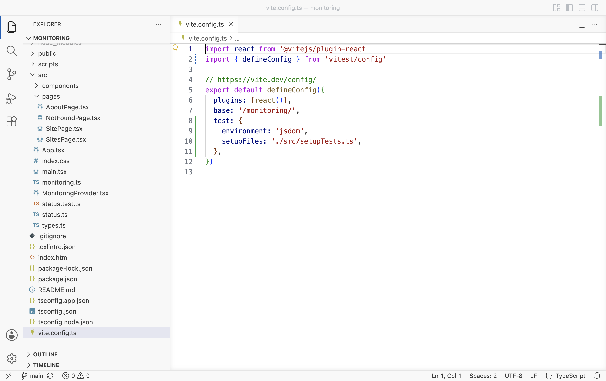
vite.config.ts: раздел test environment: 'jsdom'подключает страницу в памяти.setupFiles— файл, который Vitest выполняет перед каждым файлом тестов. - Создайте файл подготовки
Создайте
src/setupTests.ts.monitoring/src/setupTests.ts import '@testing-library/jest-dom/vitest' import { cleanup } from '@testing-library/react' import { afterEach } from 'vitest' afterEach(() => { cleanup() })
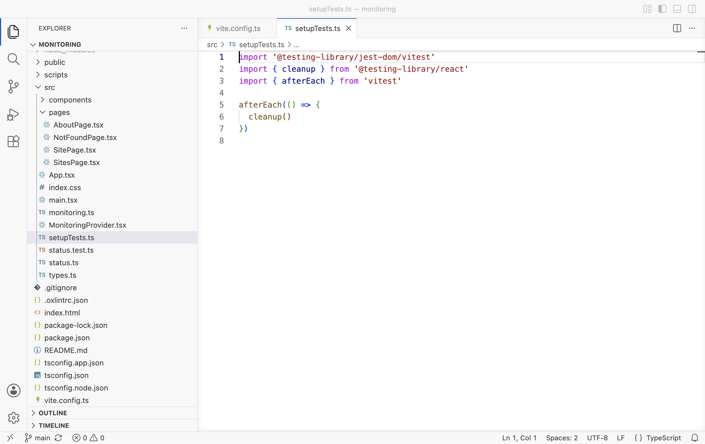
setupTests.ts Первая строка добавляет к
expectпроверки для элементов страницы:toBeInTheDocument,toHaveAttributeи другие.afterEachвыполняет функцию после каждого теста,cleanupубирает со страницы всё, что показал тест. Без неё карточки одного теста остаются на странице, когда начинается следующий. - Напишите тесты страницы
Создайте
src/pages/SitesPage.test.tsxрядом сSitesPage.tsx. Окончание.tsxнужно, потому что в тесте есть JSX.monitoring/src/pages/SitesPage.test.tsx import { render, screen } from '@testing-library/react' import { MemoryRouter } from 'react-router' import { describe, expect, it } from 'vitest' import { MonitoringContext, type Monitoring } from '../monitoring' import type { Run, Site } from '../types' import SitesPage from './SitesPage' const sites: Site[] = [ { id: 'git', name: 'Справочник по Git', url: 'https://example.org/git/' }, { id: 'react', name: 'Справочник по React', url: 'https://example.org/react/' }, { id: 'sql', name: 'Задачник по SQL', url: 'https://example.org/sql/' }, ] const run: Run = { time: '2026-11-12T21:00:00Z', checks: [ { id: 'git', ok: true, status: 200, ms: 340, error: '' }, { id: 'react', ok: false, status: 404, ms: 120, error: '' }, { id: 'sql', ok: true, status: 200, ms: 510, error: '' }, ], } function show(monitoring: Partial<Monitoring>) { const value: Monitoring = { sites, history: [run], loading: false, error: '', ...monitoring, } render( <MemoryRouter> <MonitoringContext value={value}> <SitesPage /> </MonitoringContext> </MemoryRouter>, ) } describe('SitesPage', () => { it('считает сайты, которые не открываются', () => { show({}) expect(screen.getByText('Не открываются: 1 из 3')).toBeInTheDocument() }) it('ведёт на страницу сайта', () => { show({}) const link = screen.getByRole('link', { name: /Справочник по React/ }) expect(link).toHaveAttribute('href', '/site/react') }) it('пока идёт загрузка, пишет об этом', () => { show({ loading: true }) expect(screen.getByText('Загрузка результатов…')).toBeInTheDocument() }) })
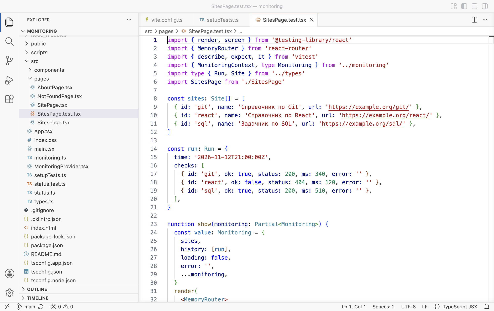
Данные теста: три сайта и одна проверка - Посмотрите на результат
Если
npm testзапущен, Vitest перезапустится сам: изменилсяvite.config.ts. Если нет — выполнитеnpm test.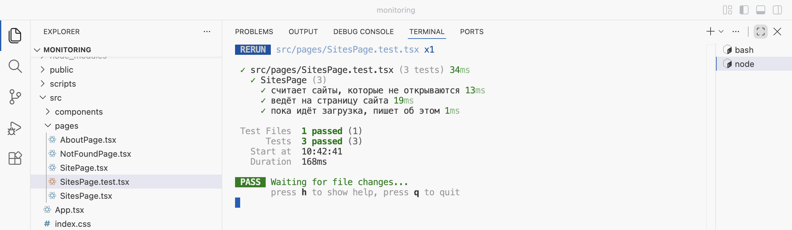
Три теста страницы прошли
РазбираемсяЧто происходит в тесте страницы
Пройдём первый тест по шагам. Слева — код из файла, справа — что происходит на каждом шаге и что лежит на странице jsdom.
function show(monitoring: Partial<Monitoring>) { const value: Monitoring = { sites, history: [run], loading: false, error: '', ...monitoring, } render( <MemoryRouter> <MonitoringContext value={value}> <SitesPage /> </MonitoringContext> </MemoryRouter>, ) } describe('SitesPage', () => { it('считает сайты, которые не открываются', () => { show({}) expect(screen.getByText('Не открываются: 1 из 3')).toBeInTheDocument() })
- Тест вызывает show({})
Пустой объект значит «ничего не менять в данных по умолчанию».
monitoring{} - Собираются данные
Три сайта, одна проверка, загрузка закончена, ошибки нет. Последняя строка
...monitoringповерх них записывает то, что передал тест. Сейчас переписывать нечего.valuesites: 3 · history: 1 · loading: false - render показывает страницу
React отрисовывает
SitesPageна страницеjsdom.useMonitoring()внутри страницы берётvalueиз ближайшегоMonitoringContext. В последней проверкеreactответил 404, остальные — 200.200Справочник по Git/site/git404Справочник по React/site/react200Задачник по SQL/site/sql - getByText ищет сводку
screen— вся страницаjsdom.getByTextищет элемент, текст которого совпадает со строкой целиком. Найден<p>Не открываются: 1 из 3</p>. - Сравнение
toBeInTheDocument()проверяет, что найденный элемент есть на странице. Тест прошёл. Если бы такого текста не было,getByTextупал бы раньше с сообщением «Unable to find an element with the text».
Второй тест ищет карточку по-другому: getByRole('link', { name: /Справочник по React/ }) — «ссылку, в названии которой есть эти слова». Роль — то, чем элемент является для пользователя: ссылка, кнопка, заголовок, поле ввода. Названием ссылки считается весь её текст: статус, название сайта и адрес. Косые черты вокруг слов задают поиск по части текста. По ролям и названиям находят элементы программы чтения с экрана для незрячих. Testing Library советует искать по роли в первую очередь: тест проверяет то, что человек видит на странице. Классы в разметке можно переименовать, и такой тест от этого не сломается.
Третий тест передаёт show({ loading: true }), и ...monitoring переписывает loading в данных. Функция show нужна, чтобы каждый тест менял только то, что ему важно, а остальные данные брал общие.
| Функция поиска | Если элемента нет | Когда нужна |
|---|---|---|
getByText, getByRole | Тест падает сразу | Элемент должен быть на странице |
queryByText, queryByRole | Возвращает null | Проверить, что элемента нет |
findByText, findByRole | Ждёт до 1 секунды, потом падает | Элемент появится позже, например после загрузки; пишется с await |
Три теста проверили требования, которые и так видно при открытии страницы. Добавим два оставшихся из таблицы §1.
§4Тесты по требованиям находят ошибки
ДелаемЕщё два требования
- Добавьте два теста
Допишите в конец
describeвSitesPage.test.tsxдва теста. Первый: все три сайта открылись — сводка должна сказать «Все 3 сайта открываются». Второй: истории проверок нет — на странице не должно быть слов «Не открываются». Ожидаемый текст взят из требования.monitoring/src/pages/SitesPage.test.tsx · новые тесты it('все сайты открываются', () => { show({ history: [{ ...run, checks: run.checks.map((c) => ({ ...c, ok: true })) }] }) expect(screen.getByText('Все 3 сайта открываются')).toBeInTheDocument() }) it('проверок ещё не было', () => { show({ history: [] }) expect(screen.queryByText(/Не открываются/)).not.toBeInTheDocument() })
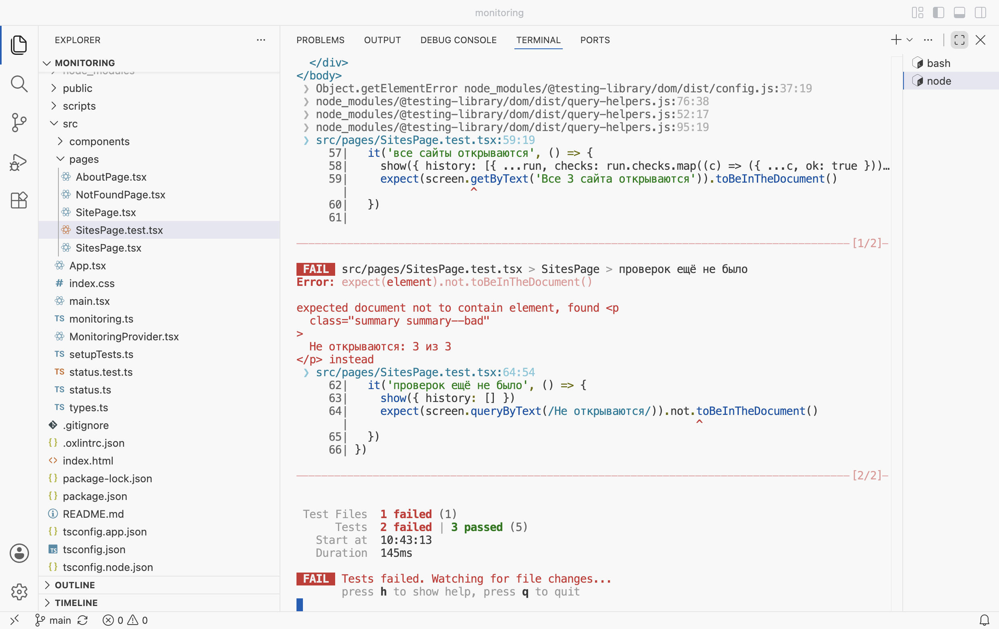
проверок ещё не было; expected document not to contain element, found p class summary summary--bad Не открываются: 3 из 3 instead; выше — строка 59 getByText Все 3 сайта открываются; Tests 2 failed | 3 passed" loading="lazy">Оба новых теста упали
Оба падения указывают на ошибки в коде страницы. Первый тест сообщает: «Unable to find an element with the text: Все 3 сайта открываются». В коде страницы слово записано одной строкой `Все ${sites.length} сайтов открываются`, и при трёх сайтах получается «Все 3 сайтов». В группе из шести сайтов ошибки не видно — «Все 6 сайтов» звучит правильно, поэтому её никто не заметил.
Второй тест сообщает, что нашёл элемент, которого быть не должно: <p class="summary summary--bad">Не открываются: 3 из 3</p>. Когда проверок не было, страница объявляет все сайты сломанными. Убедимся, что это видно и в приложении.
- Очистите историю
Временно замените содержимое
public/data/results.jsonна{"history":[]}— так выглядит монитор сразу после создания, до первой ночной проверки. Запуститеnpm run devво втором терминале и откройте страницу.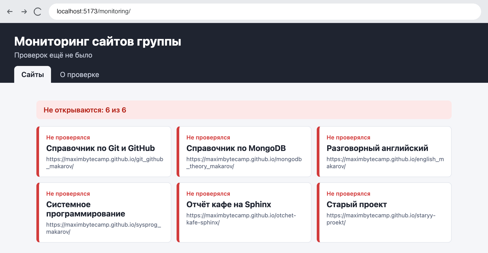
Шапка: «Проверок ещё не было». Сводка: «Не открываются: 6 из 6» Шапка и сводка противоречат друг другу. Карточки пишут «Не проверялся», а сводка считает такой сайт неработающим: условие
!last?.checks.find(…)?.okистинно и тогда, когда проверки нет совсем. Вернитеresults.json:git checkout public/data/results.json. Сервер разработки можно остановить.
ДелаемИсправляем страницу
- Функция для слова «сайт»
Создайте
src/plural.ts. Функция выбирает форму слова по числу.monitoring/src/plural.ts export function sitesWord(count: number) { const last = count % 10 const lastTwo = count % 100 if (last === 1 && lastTwo !== 11) { return 'сайт' } if (last >= 2 && last <= 4 && (lastTwo < 12 || lastTwo > 14)) { return 'сайта' } return 'сайтов' }
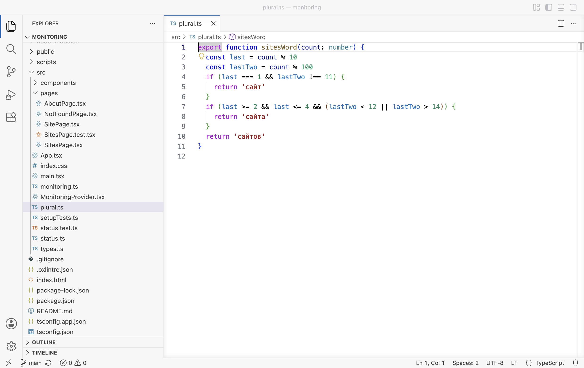
plural.ts Форма зависит от последней цифры числа (
count % 10— остаток от деления на 10) и от двух последних (count % 100). Последняя цифра 1 — «сайт» (1, 21, 101), кроме 11. Последняя цифра 2–4 — «сайта» (3, 24), кроме 12–14. Все остальные — «сайтов» (6, 11, 12, 111). - Исправьте сводку
Замените содержимое
src/pages/SitesPage.tsx. Текст сводки теперь собирается в переменнойsummary: сначала — вариант «все открываются», затем он заменяется, если проверок не было или есть неработающие сайты.monitoring/src/pages/SitesPage.tsx import { Link } from 'react-router' import { useMonitoring } from '../monitoring' import { sitesWord } from '../plural' import { statusText } from '../status' function SitesPage() { const { sites, history, loading, error } = useMonitoring() if (loading) { return <p className="empty">Загрузка результатов…</p> } if (error !== '') { return <p className="load-error">{error}</p> } const last = history[0] const down = sites.filter((site) => !last?.checks.find((c) => c.id === site.id)?.ok).length let summary = `Все ${sites.length} ${sitesWord(sites.length)} открываются` if (last === undefined) { summary = 'Проверок ещё не было' } else if (down > 0) { summary = `Не открываются: ${down} из ${sites.length}` } return ( <> <p className={last !== undefined && down > 0 ? 'summary summary--bad' : 'summary'}> {summary} </p> <div className="sites"> {sites.map((site) => { const check = last?.checks.find((c) => c.id === site.id) return ( <Link key={site.id} to={`/site/${site.id}`} className={check?.ok ? 'site' : 'site site--bad'}> <span className="site__status">{statusText(check)}</span> <h2>{site.name}</h2> <span className="site__url">{site.url}</span> </Link> ) })} </div> </> ) } export default SitesPage
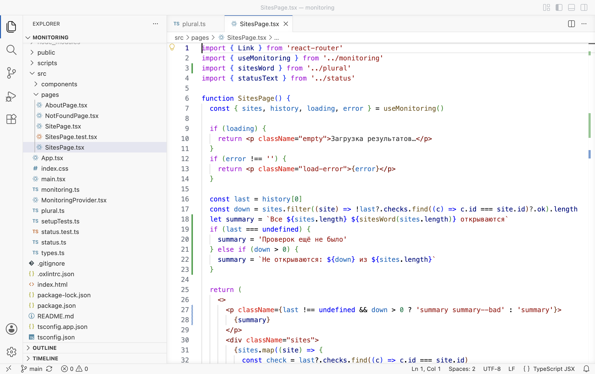
0 — Не открываются" loading="lazy">SitesPage.tsx: переменная summary Красная рамка сводки (
summary--bad) теперь включается, только когда проверка была и в ней есть неработающие сайты. Список карточек показывается, даже если проверок не было: на карточках стоит «Не проверялся». - Посмотрите на тесты
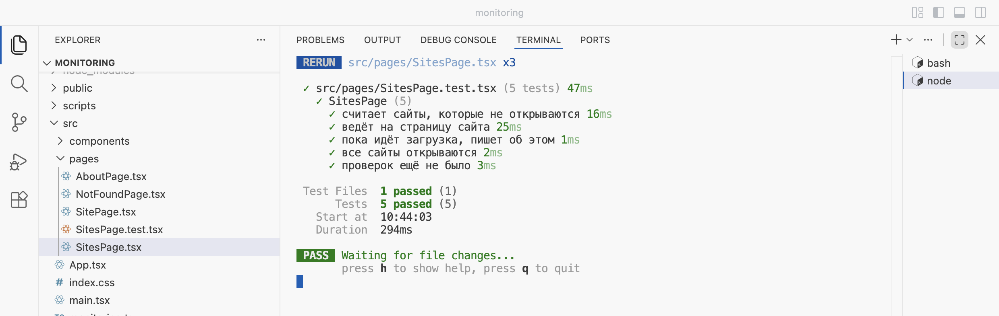
Пять тестов страницы прошли
Пример проекта модуля 3 проверялся руками при съёмке главы 3.4 и проекта, и обе ошибки остались незамеченными. Их нашли тесты, которые описывали требования к странице, включая неудобные случаи: три сайта вместо шести, пустая история. Такие случаи и стоит искать первыми: пустой список, один элемент, ошибка загрузки, числа 1, 2, 5, 11.
Тесты страницы показывали её и читали текст. Пользователь ещё и щёлкает, а данные приходят из сети.
§5Щелчок и ошибка загрузки
ДелаемЕщё три файла тестов
- Щелчок по карточке
Создайте
src/App.test.tsx. Тест показывает всё приложение с маршрутами, щёлкает по карточке и проверяет, что открылась страница сайта.monitoring/src/App.test.tsx import { render, screen } from '@testing-library/react' import userEvent from '@testing-library/user-event' import { MemoryRouter } from 'react-router' import { describe, expect, it } from 'vitest' import App from './App' import { MonitoringContext, type Monitoring } from './monitoring' const monitoring: Monitoring = { sites: [ { id: 'git', name: 'Справочник по Git', url: 'https://example.org/git/' }, { id: 'react', name: 'Справочник по React', url: 'https://example.org/react/' }, ], history: [ { time: '2026-11-12T21:00:00Z', checks: [ { id: 'git', ok: true, status: 200, ms: 340, error: '' }, { id: 'react', ok: false, status: 404, ms: 120, error: '' }, ], }, { time: '2026-11-11T21:00:00Z', checks: [ { id: 'git', ok: true, status: 200, ms: 310, error: '' }, { id: 'react', ok: true, status: 200, ms: 290, error: '' }, ], }, ], loading: false, error: '', } describe('App', () => { it('по щелчку на карточке открывает страницу сайта', async () => { const user = userEvent.setup() render( <MemoryRouter> <MonitoringContext value={monitoring}> <App /> </MonitoringContext> </MemoryRouter>, ) await user.click(screen.getByRole('link', { name: /Справочник по React/ })) const heading = screen.getByRole('heading', { name: 'Справочник по React' }) expect(heading).toBeInTheDocument() const text = screen.getByText('Открывался в 1 из 2 последних проверок.') expect(text).toBeInTheDocument() }) })
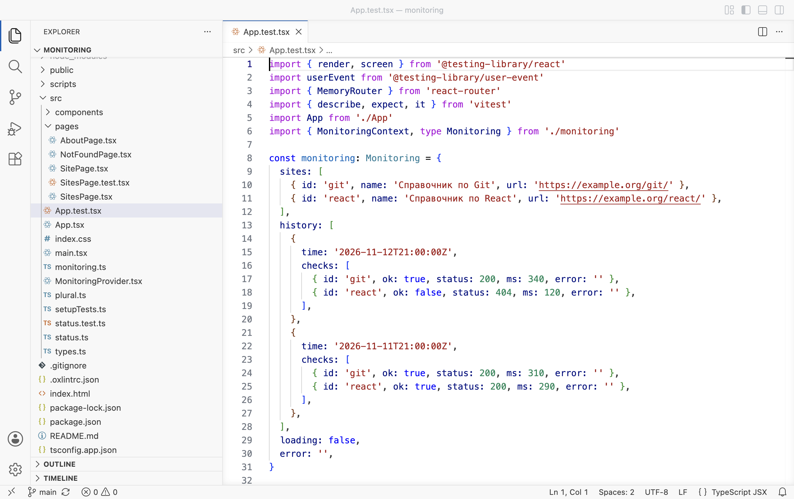
Два сайта, две проверки - Ошибка загрузки
Создайте
src/MonitoringProvider.test.tsx. Здесь проверяется сам провайдер: что он покажет, если файл не загрузился.monitoring/src/MonitoringProvider.test.tsx import { render, screen } from '@testing-library/react' import { afterEach, describe, expect, it, vi } from 'vitest' import MonitoringProvider from './MonitoringProvider' import SitesPage from './pages/SitesPage' import { MemoryRouter } from 'react-router' afterEach(() => { vi.unstubAllGlobals() }) describe('MonitoringProvider', () => { it('сообщает, какой файл не загрузился', async () => { vi.stubGlobal('fetch', vi.fn(async () => new Response('', { status: 404 }))) render( <MemoryRouter> <MonitoringProvider> <SitesPage /> </MonitoringProvider> </MemoryRouter>, ) const message = await screen.findByText('Файл sites.json не загрузился: код 404.') expect(message).toBeInTheDocument() }) })
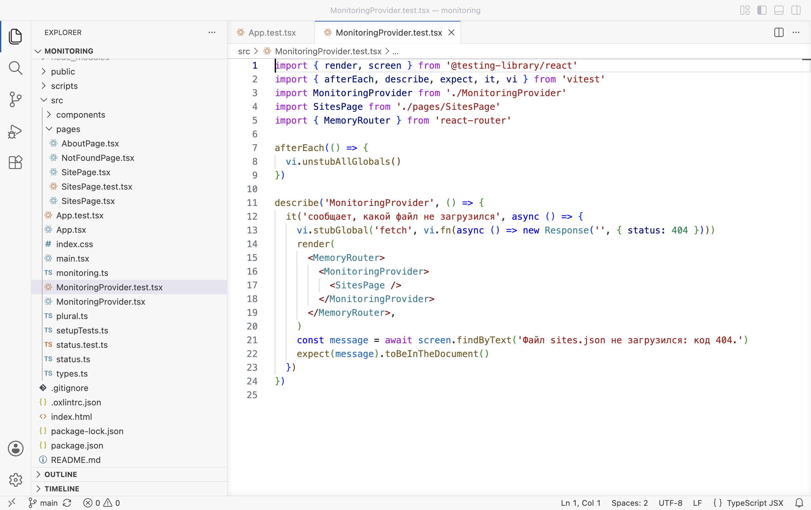
fetch подменён ответом 404 - Формы слова
Создайте
src/plural.test.ts— тесты функции из §4 на восьми числах.monitoring/src/plural.test.ts import { expect, it } from 'vitest' import { sitesWord } from './plural' it.each([ [1, 'сайт'], [3, 'сайта'], [6, 'сайтов'], [11, 'сайтов'], [12, 'сайтов'], [21, 'сайт'], [24, 'сайта'], [111, 'сайтов'], ])('%i — %s', (count, word) => { expect(sitesWord(count)).toBe(word) })
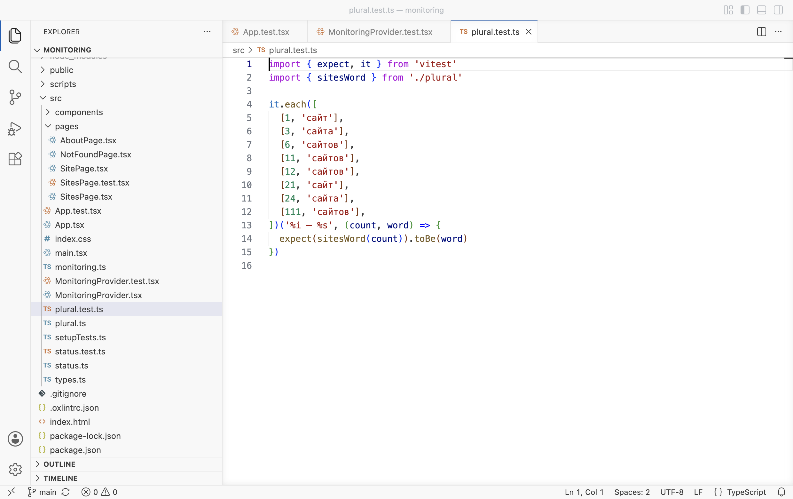
Восемь чисел — восемь тестов - Запустите все тесты
Остановите наблюдение клавишей q и снова выполните
npm test: первый прогон показывает все файлы.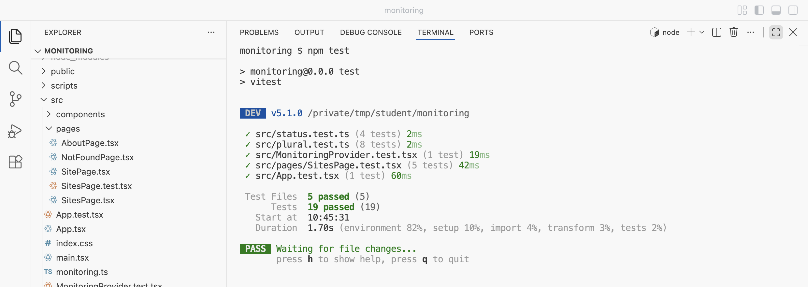
5 файлов, 19 тестов, меньше двух секунд
РазбираемсяДействия пользователя и подмена сети
it('по щелчку на карточке открывает страницу сайта', async () => { 1 const user = userEvent.setup() 2 render( <MemoryRouter> <MonitoringContext value={monitoring}> <App /> 3 </MonitoringContext> </MemoryRouter>, ) await user.click(screen.getByRole('link', { name: /Справочник по React/ })) 4 const heading = screen.getByRole('heading', { name: 'Справочник по React' }) 5 expect(heading).toBeInTheDocument() const text = screen.getByText('Открывался в 1 из 2 последних проверок.') expect(text).toBeInTheDocument() })
- 1
Функция теста помечена
async: внутри неё естьawait. - 2
userEvent.setup()создаёт «пользователя». Он щёлкает так, как это делает человек: наводит указатель, нажимает и отпускает кнопку мыши, и на странице возникают все те же события. - 3
Показывается всё приложение: шапка, маршруты, страницы.
MemoryRouterбез настроек начинает с адреса/, поэтому сначала открыта страница «Сайты». - 4
Щелчок по карточке React.
awaitждёт, пока React обработает щелчок иLinkсменит адрес вMemoryRouterна/site/react. - 5
Теперь показана
SitePage: заголовок с названием сайта и строка «Открывался в 1 из 2 последних проверок» — в последней проверке 404, в предыдущей 200. Тест проверил сразу маршрут/site/:id, поиск сайта поidи подсчёт по истории.
В тесте провайдера данные должны прийти через fetch, а сети в тесте нет. Функция vi.stubGlobal('fetch', …) подменяет глобальную fetch на время теста. Подменой служит vi.fn(async () => new Response('', { status: 404 })). Это функция, которая на любой адрес отвечает пустым ответом с кодом 404, как Pages на файл, которого нет. Провайдер получает ответ, loadJson выбрасывает ошибку «Файл sites.json не загрузился: код 404.», страница показывает её. Всё это происходит после первой отрисовки, в эффекте. Поэтому текст ищется через await screen.findByText: функция ждёт, пока он появится. vi.unstubAllGlobals() в afterEach возвращает настоящую fetch, чтобы подмена не перешла в другие тесты.
В plural.test.ts восемь одинаковых тестов записаны одним: it.each принимает таблицу пар «число — слово» и создаёт по тесту на строку. В название подставляются значения: %i — число, %s — строка; в выводе тесты называются «1 — сайт», «3 — сайта» и так далее.
Все тесты зелёные. Но зелёный тест ещё не значит, что код правильный.
§6Тест, который ничего не ловит
РазбираемсяОжидание, списанное с результата
Тесты к странице можно написать по-другому: запустить страницу, посмотреть, что она показывает, и записать это в toBe. Ожидания в двух последних тестах тогда выглядят так.
it('все сайты открываются', () => { show({ history: [{ ...run, checks: run.checks.map((c) => ({ ...c, ok: true })) }] }) expect(screen.getByText('Все 3 сайтов открываются')).toBeInTheDocument() }) it('проверок ещё не было', () => { show({ history: [] }) expect(screen.getByText('Не открываются: 3 из 3')).toBeInTheDocument() })
ДелаемОпыт: возвращаем старую страницу
- Верните код проекта модуля 3
Отложите исправленную страницу в корень проекта и верните из репозитория версию с ошибками. Затем замените два ожидания в
SitesPage.test.tsx, как в блоке выше.Терминал · папка monitoring cp src/pages/SitesPage.tsx SitesPage-fixed.tsx git checkout src/pages/SitesPage.tsx
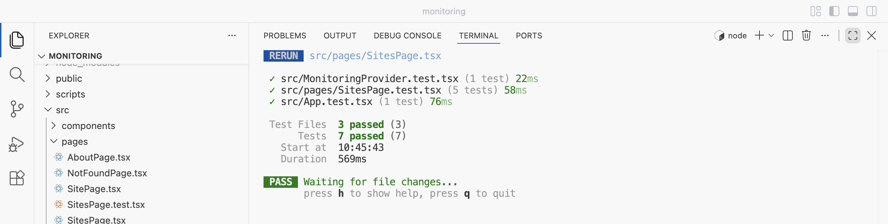
Код с обеими ошибками, тесты зелёные - Верните исправленную версию
Верните исправленную страницу на место и ожидания по требованиям в тестах.
Терминал · папка monitoring mv SitesPage-fixed.tsx src/pages/SitesPage.tsx
Учитель составил ключ к контрольной по работе одного ученика. Ошибки этого ученика попали в ключ как правильные ответы. Теперь такие же ошибки в других работах засчитываются как верные.
Ключ к контрольной можно исправить перед проверкой. Тест со списанным ожиданием ещё и мешает исправить код: после исправления он падает.
Тест, списанный с результата, подтверждает, что код делает то, что делает. Ошибка попадает в ожидание, и тест её охраняет: если кто-то исправит «Все 3 сайтов», такой тест упадёт. Ожидание в тесте берут из требования: из задания, из таблицы §1, из того, что ждёт пользователь.
В модуле 4 тесты будет писать агент, поэтому ловушка касается и его работы. Если попросить агента «напиши тесты к этому файлу» и не дать требований, у него есть только код, и ожидания ему взять неоткуда, кроме этого кода. Поэтому в задании агенту требования перечисляют явно, а его тесты проверяют двумя вопросами:
- Что проверяет тест? Его название и ожидание должны совпадать с требованием из задания.
- Может ли он упасть? Сломайте код по требованию — как в опыте с
мсв §2 — и посмотрите, покраснеет ли тест. Тест, который не падает при поломке, ничего не проверяет.
Тесты запускаются на вашем компьютере, когда вы о них помните. Конвейер публикации может запускать их сам перед каждой публикацией.
§7Тесты перед публикацией
ДелаемШаг тестов в deploy.yml
- Добавьте шаг
Откройте
.github/workflows/deploy.ymlи вставьте шаг «Запустить тесты» между установкой зависимостей и сборкой.monitoring/.github/workflows/deploy.yml · шаги - name: Получить код uses: actions/checkout@v7 with: ref: main - name: Установить Node.js uses: actions/setup-node@v7 with: node-version: 24 cache: npm - name: Установить зависимости run: npm ci - name: Запустить тесты run: npm test - name: Собрать сайт run: npm run build - name: Копия index.html для прямых ссылок run: cp dist/index.html dist/404.html - name: Упаковать папку dist uses: actions/upload-pages-artifact@v5 with: path: dist - name: Опубликовать id: deployment uses: actions/deploy-pages@v5
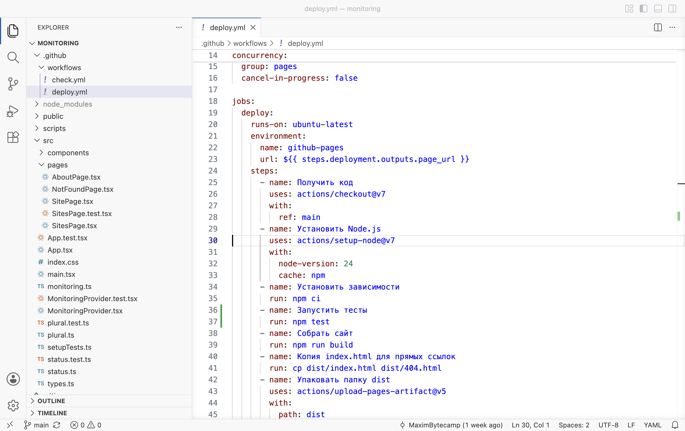
Тесты — после npm ci и перед сборкой - Проверьте, как тесты пройдут на сервере
GitHub Actions задаёт на своих машинах переменную
CI=true. Выполните тесты с ней локально.Терминал · папка monitoring CI=true npm test
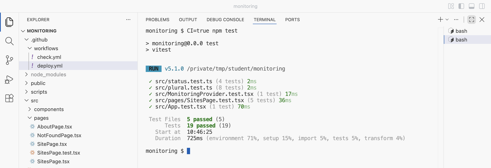
Один прогон без наблюдения — 19 тестов Вместо
DEVв выводе стоитRUN, а после итога сразу появляется приглашение терминала: Vitest выполнил тесты один раз и завершился. Так же он отработает в конвейере. В Windows PowerShell переменная задаётся по-другому:$env:CI="true"; npm test. - Отправьте изменения
Сохраните тесты в репозитории.
Терминал · папка monitoring git pull git add . git commit -m "Тесты страницы сайтов, исправлены сводка и склонение" git push
git pullнужен, потому что ночная проверка из главы 3.4 добавляет в репозиторий коммиты бота. После отправки откройте вкладку Actions: в запуске «Публикация на GitHub Pages» среди шагов есть «Запустить тесты».
Публикация с тестами
Упавший шаг останавливает задание: сборка и публикация не выполняются.
На заводе отдел технического контроля проверяет партию до отправки в магазин. Бракованная партия остаётся на складе, а в магазине лежит товар из прошлой партии.
Контролёр осматривает каждое изделие. Шаг тестов проверяет только то, что описано в тестах: ошибку, для которой теста нет, он пропустит.
Схема показывает, зачем тесты стоят перед сборкой. Каждый шаг задания выполняется, только если предыдущие прошли успешно. Vitest с упавшим тестом завершается с ошибкой, шаг «Запустить тесты» становится красным, и GitHub пропускает сборку и публикацию. На сайте остаётся прежняя версия, а GitHub по умолчанию присылает уведомление об упавшем запуске. Сломанная сводка не попадёт к пользователям, даже если вы забыли запустить тесты дома.
Ночная проверка из главы 3.4 вызывает этот же deploy.yml заданием publish, поэтому тесты выполняются и перед каждой ночной публикацией.
§8Частые ошибки
Сообщения получены на проекте monitoring: в каждой строке убрана одна часть настройки из этой главы.
| Что видно | Почему | Что сделать |
|---|---|---|
ReferenceError: document is not defined | Тесты выполняются в Node.js без страницы | Добавить environment: 'jsdom' в раздел test файла vite.config.ts |
Error: Invalid Chai property: toBeInTheDocument | Проверки jest-dom не подключены | Проверить setupFiles и строку import '@testing-library/jest-dom/vitest' |
Found multiple elements with the role "link" and name … | Страница прошлого теста не убрана | Добавить cleanup в afterEach в setupTests.ts |
TypeError: Cannot destructure property 'basename' of 'React$1.useContext(...)' as it is null. | Link показан без маршрутизатора | Обернуть компонент в MemoryRouter |
Error: useMonitoring вызван вне MonitoringProvider | Компоненту не передан контекст | Обернуть в MonitoringContext value={…} с придуманными данными |
Unable to find an element with the text: … | Текст на странице другой или разбит на несколько элементов | Посмотреть разметку под сообщением; если ожидание верное — ошибка в коде |
Vitest выполнил тесты и завершился, хотя запущен npm test | В окружении есть CI или переменные ИИ-агента | Так и должно быть в конвейере; дома запускать из обычного терминала |
§9Проверьте себя
Тест проходит. Что нужно сделать, чтобы убедиться, что он что-то проверяет?
Сломать код так, чтобы нарушилось требование из названия теста, и убедиться, что тест упал. Потом вернуть код.
Почему в тесте страницы нет MonitoringProvider?
Провайдер загружает файлы через fetch, и результат теста зависел бы от сети и от содержимого results.json. Компонент обёрнут в MonitoringContext с придуманными данными, ответ на которых известен заранее.
Чем getByText отличается от queryByText?
Если элемента нет, getByText роняет тест, а queryByText возвращает null. Вторая нужна, чтобы проверить, что элемента нет: expect(screen.queryByText(…)).not.toBeInTheDocument().
Почему ошибку «Все 3 сайтов» легко пропустить при проверке руками?
В группе шесть сайтов, а «Все 6 сайтов» звучит правильно. Ошибка проявляется только при числах, оканчивающихся на 1–4, а такие данные руками никто не готовил.
Когда в тесте нужен findByText с await?
Когда текст появляется после ожидания: загрузки данных в эффекте, ответа fetch. findByText ждёт его появления до одной секунды.
Что произойдёт на GitHub, если в main отправить код с упавшим тестом?
Шаг «Запустить тесты» в deploy.yml завершится ошибкой, сборка и публикация будут пропущены, на сайте останется прежняя версия.
Шпаргалка
npm test — наблюдение; q выход, a все тестыCI=true npm testit('требование', () => { expect(x).toBe(y) })render(<MemoryRouter>…</MemoryRouter>)screen.getByText, getByRole('link', { name })expect(screen.queryByText(…)).not.toBeInTheDocument()await screen.findByText(…)const user = userEvent.setup(), await user.click(…)vi.stubGlobal('fetch', vi.fn(…)), после — vi.unstubAllGlobals()it.each([[1, 'сайт'], …])('%i — %s', …)Итог главы
- Тест готовит данные, запускает код и сравнивает результат с ожидаемым. Vitest находит файлы
*.test.ts(x)и запускает их командойnpm test; дома он следит за файлами и повторяет тесты после сохранения. - Компонент в тесте показывается на странице
jsdomв памяти функциейrenderиз Testing Library. Данные приходят черезMonitoringContextс придуманными значениями, ссылки работают внутриMemoryRouter. Элементы ищутся так, как их видит пользователь: по тексту и по роли. - Щелчки выполняет
userEvent, сеть подменяетvi.stubGlobal('fetch', …), текст, который появится позже, ищется черезawait findByText. - Тесты по требованиям нашли в проекте модуля 3 две ошибки: «Все 3 сайтов» и «Не открываются: 6 из 6» до первой проверки. Тест, ожидание которого списано с результата, их пропускает. Каждый тест должен падать, если нарушить его требование.
- Шаг
npm testвdeploy.ymlперед сборкой не даёт опубликовать сайт с упавшим тестом.
Источники
- Vitest — Getting Started
- Vitest — Configuring Vitest (environment, setupFiles, watch)
- Vitest — vi.stubGlobal
- Testing Library — React Testing Library
- Testing Library — About Queries (порядок выбора запросов)
- Testing Library — user-event
- jest-dom — дополнительные проверки для элементов
- GitHub Docs — Default environment variables (CI)